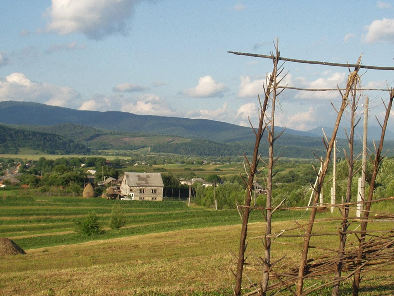

<a harf=<a href="https://en.wikipedia.org/wiki/Zakarpattia_Oblast">Scenic view of Turja Pasika village, north of Mukachevo</a> © 2004 by <a href="https://en.wikipedia.org/wiki/Zakarpattia_Oblast#/media/File:Scenic_view_north_of_Mukachevo_Transcarpathia.jpg">Sarov702</a> is licensed under <a href="https://creativecommons.org/licenses/by/4.0/">CC BY 4.0</a>